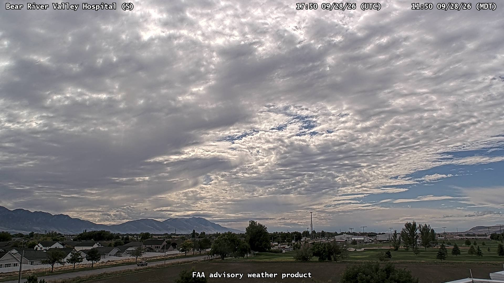
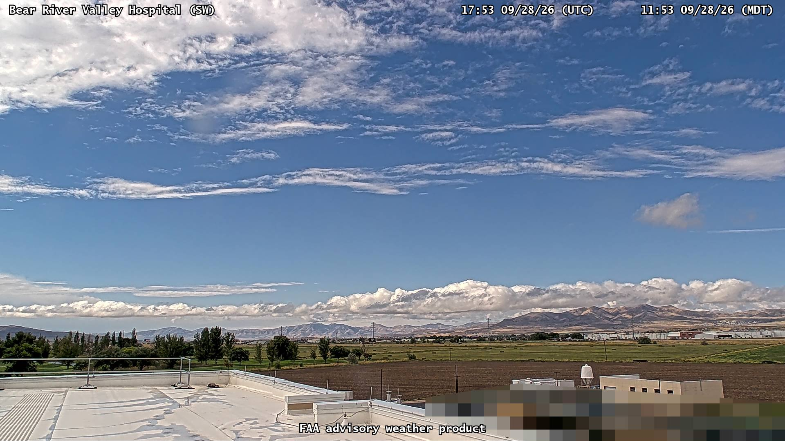
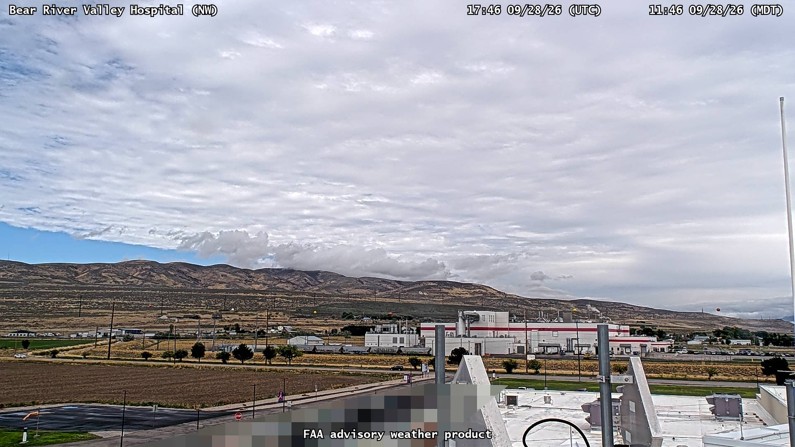
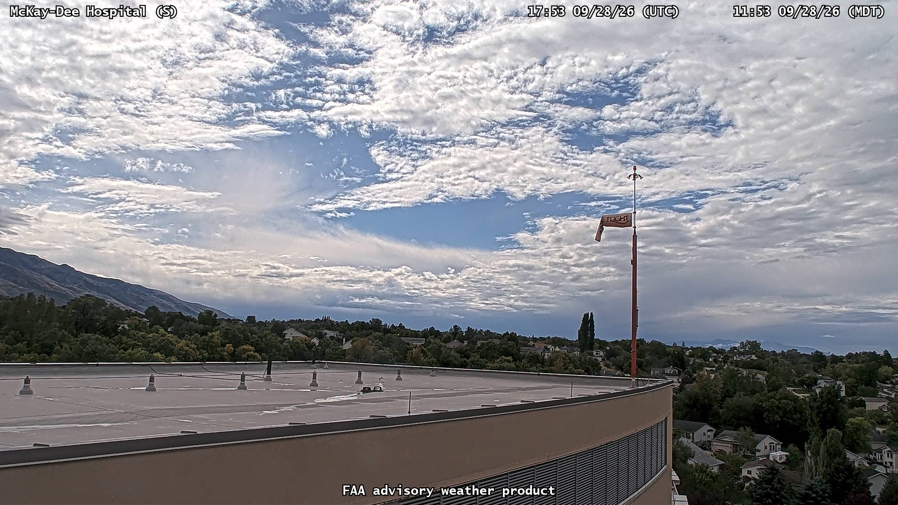
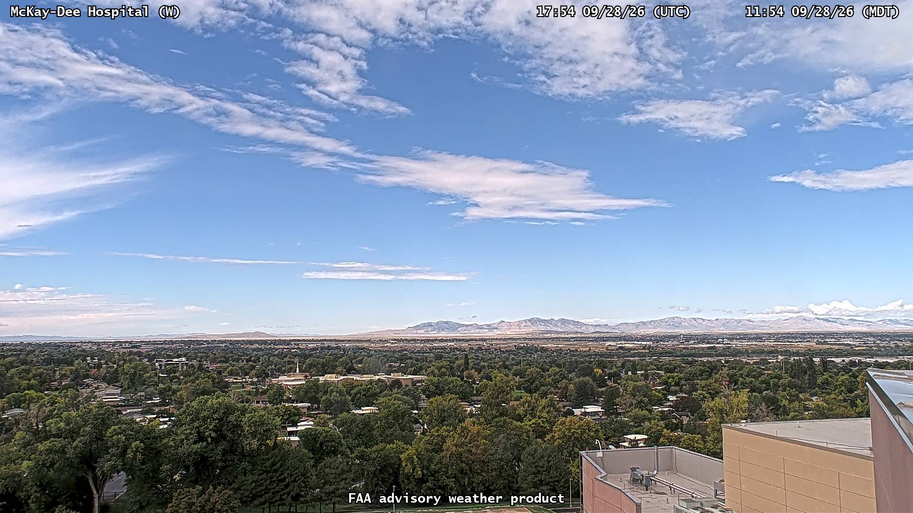
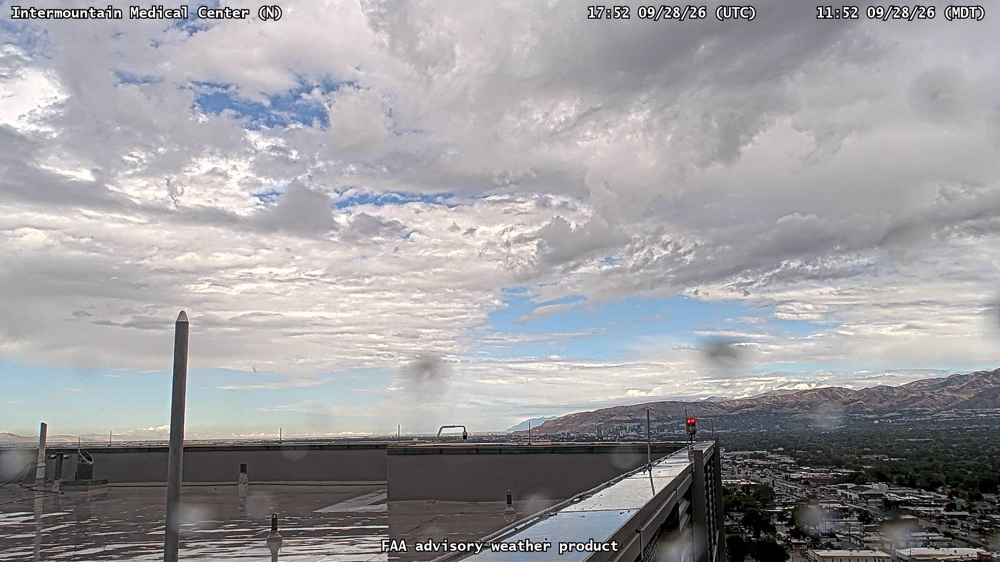
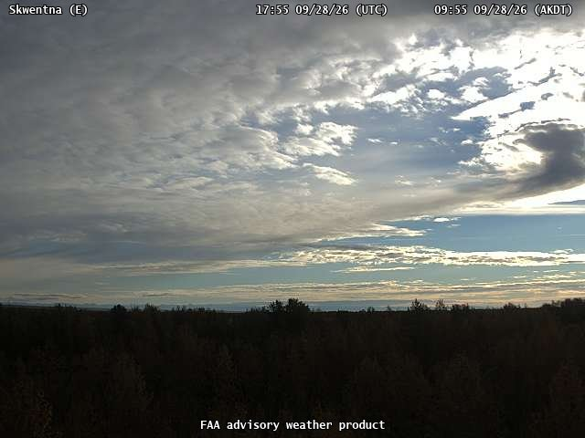
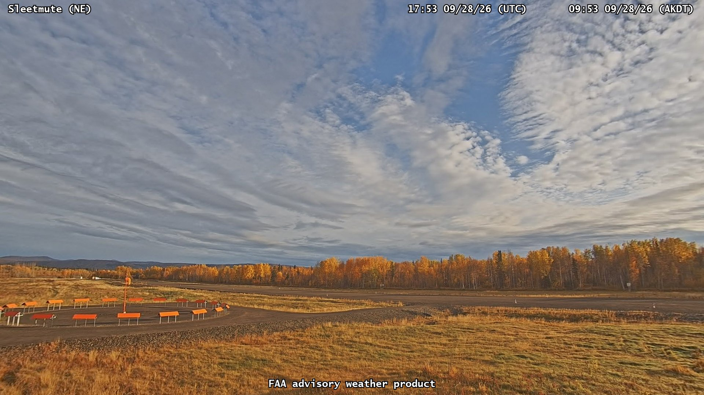
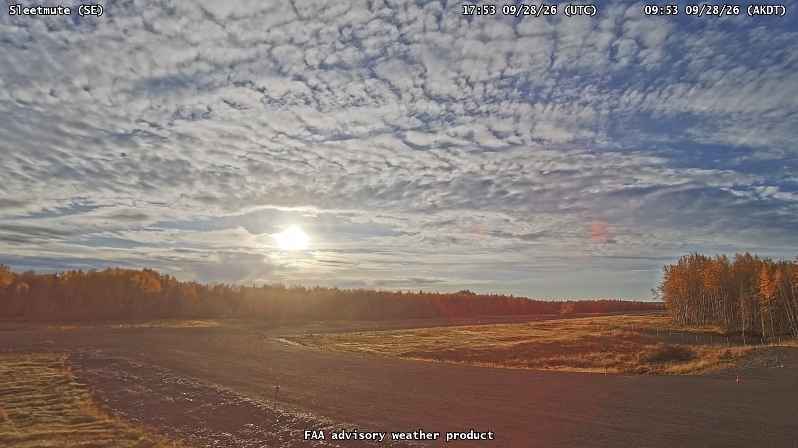
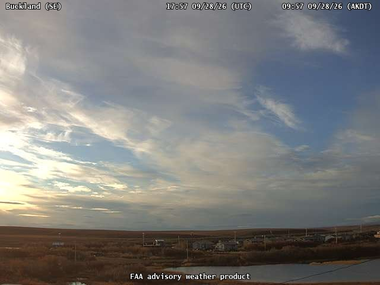

Interesting camera views
10 user-selected FAA snapshots · September 28, 2026

14000 · interesting goodBear River Valley Hospital · South
2026-09-28T17:50:36.165ZFAA source 
14001 · interesting goodBear River Valley Hospital · SouthWest
2026-09-28T17:54:21.737ZFAA source 
14002 · interesting goodBear River Valley Hospital · NorthWest
2026-09-28T17:46:29.565ZFAA source 
13981 · interesting goodMcKay-Dee Hospital · South
2026-09-28T17:53:37.151ZFAA source 
13982 · interesting goodMcKay-Dee Hospital · West
2026-09-28T17:54:41.235ZFAA source 
13983 · interesting goodIntermountain Medical Center · North
2026-09-28T17:52:54.922ZFAA source 
10569 · interesting goodSkwentna · East
2026-09-28T17:55:37.062ZFAA source 
10779 · interesting goodSleetmute · NorthEast
2026-09-28T17:53:37.280ZFAA source 
10780 · interesting goodSleetmute · SouthEast
2026-09-28T17:53:55.461ZFAA source 
10375 · interesting goodBuckland · SouthEast
2026-09-28T17:58:10.240ZFAA source